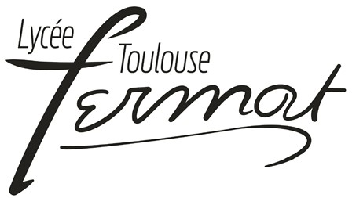

Ce site présente mes différents projets d'électronique et d'informatique.
Il a été crée a l'origine pour un projet en 1er pour la spécialité NSI : voici le projet original
Je suis actuellement en classe préparatoire au Lycée pierre de Fermat
